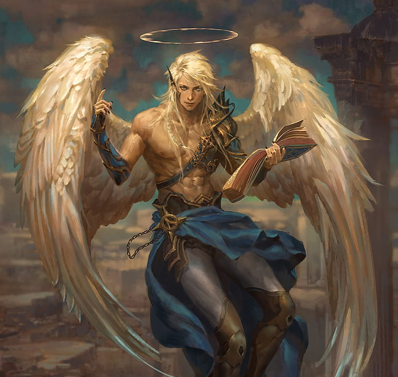

Force

Résistance
Dextérité
Magie
Ingénierie

Environnement : Balcon de la Destinée - Yple
Durée de vie moyenne : 600 ans
Taille : M
Système politique : Peuple dirigé par les archanges
Statut politique : -
Relations hostiles : Ga’ar et ses créations
Alliés : Archanges et Hérauts
Croyance : Ysiiri
Force
Résistance
Dextérité
Magie
Ingénierie
Capacités innées : Ailes naissantes dans le dos et permettant de voler - Auréole au dessus de la tête en signe de bénédiction divine
Facilités magiques : Magie blanche / lumineuse
Impossibilités : Magie noire / occulte
Avoir les moyens d’agir ne veut pas dire agir, les anges en sont la preuve concrète. Depuis des millénaires ils existent, dévoilant rarement leur présence au monde immanent et aux peuples qui y vivent, les laissant se démener dans la fange qui leur est commune. Pourtant, vivant au Balcon de la Destinée, les peuples ailés ont un rôle bien précis, celui d’être rempart face à la possible ascension de Ga’ar, afin de protéger le Dieu qui les fit naître ; Ysiiri.
Profil type : Fervent croyant - Porte-parole divin - Empathique - Juste - Honorable
Alimentation : Omnivore - Denrées apparaissant naturellement chaque jour et vignes cultivées
Monture : Aucune
Les anges sont pliés à la volonté des archanges, il en a toujours été ainsi, les pouvoirs des archanges dépassant amplement le leur, du fait que les anges n’ont que deux ailes et les archanges quatre, s’approchant d’autant plus de leur divinité. Mis-à-part leurs excroissances défigurant leurs dos, les anges perdent leurs attributs quand ils entrent dans les autres pans de l’Yndrill, c’est à dire que leurs ailes se rétractent, et leur halo disparaît, les empêchant de révéler leur vraie nature aux peuples humains. Sous ces conditions, ils conservent une faculté à revenir rapidement, par la prière, au sein des terres qui leur furent offertes.
Si un ange se rebelle contre Ysiiri, ou contre les archanges, celui-ci va alors chuter du Balcon. Il deviendra mortel et ne sera plus autorisé à retourner sur les terres divines. À leur mort, les anges déchus ne peuvent devenir Einherjar.
Nombre d'OC de cette race sur Yndrill: -